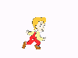

<html>
<head>
<title>阶梯柱图，柱顶象徵图标</title>
<meta http-equiv="content-type" content="text/html; charset=utf-8">
<script src="../../../js/jquery/jquery.min.js" type="text/javascript"></script>
<script src="../../../js/highcharts/highcharts.src.js" type="text/javascript"></script>
<script type="text/javascript">
	$(function(){
		$('#container').highcharts({
			chart:{
				renderTo:'container',
				type:'column'
			},
			title:{
				text:''
			},
			legend:{
				enabled:false
			},
			credits:{
				enabled:false
			},
			tooltip:{
				enabled:false
			},
			xAxis:{
				categories:['一', '二', '三', '四', '五', '六', '七', '八', '九', '十', '十一', '十二']
			},
			plotOptions:{
				series:{
					pointPadding:0,
					groupPadding:0,
					borderWidth:0,
					borderColor:'white'//设置 borderWidth 大于1时可见
				},
				column:{
					pointPadding:0.2,
					borderWidth:0,
					dataLabels:{
						enabled:true,
						useHTML:true,
						padding:0,
						x:-5,
						y:-30,
						formatter:function(){
							var _this= this;
							var _mv= _this.series.symbolValue;
							if(!_mv){
								jQuery.each(this.series.data, function(index_, point_){
									if(point_.category === "五"){
										_this.series.symbolValue= _mv= point_.y;
									}
								});
							}
							if(this.y === _mv){
								return "";
							}else if(this.y > _mv){
								return "";
							}
						}
					}
				}
			},
			series:[{
				data:[29.5, 39.8, 49.9, 59.5, 69.9, 75.6, 89, 99.9, 100.5, 110, 120.7, 130.9]
			}]
		});
	});
</script>
</head>
<body>
  <div id="container" style="min-width: 700px; height: 400px; background: #0F979A;"></div>
</body>
</html>